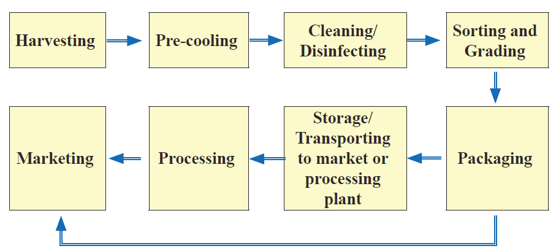

Precooling:
Precooling is a way to quickly get rid of heat after harvesting vegetables. This is important because the heat can make the vegetables spoil faster. Precooling helps to remove field heat from vegetables after they are harvested. It also helps to stop the vegetables from losing water and spoiling. In this way, vegetables can be kept fresh for a long time and retain their taste. Precooling can be achieved by placing vegetables in a cool place, such as a refrigerator or a cool room. If refrigerators or cool rooms are not available, the vegetables can be placed in a cool shaded area, charcoal evaporative cooler or zero energy cooling chamber.
Cleaning or disinfection:
Farmers and people who handle vegetables need to clean or disinfect properly. This is important to prevent diseases and incidences of food-related illnesses that can be transmitted to people who eat the vegetables.
Sorting and grading:
When we sort vegetables, we get rid of the ones that are spoiled, damaged, or diseased. This is important because it stops the production of a harmful gas called ethylene and also it avoids contamination which can affect other vegetables. Grading involves organising vegetables based on characteristics such as their colour, size, shape, how ripe they are, or how mature they are. Grading helps us to easily identify and handle the vegetables based on certain common parameters.
Packaging:
Packaging of vegetables is about protecting them from harm. We put them in boxes or bags to keep them safe from being damaged. This also helps us to easily carry or handle them. However, if we use the wrong materials for packaging, it can cause the vegetables to get damaged, leading to losses. In Tanzania, we often use wooden crates, cardboard boxes, woven palm baskets, plastic crates, nylon sacks, jute sacks, and polythene bags for packaging. However, some of these materials may not protect the vegetables well.